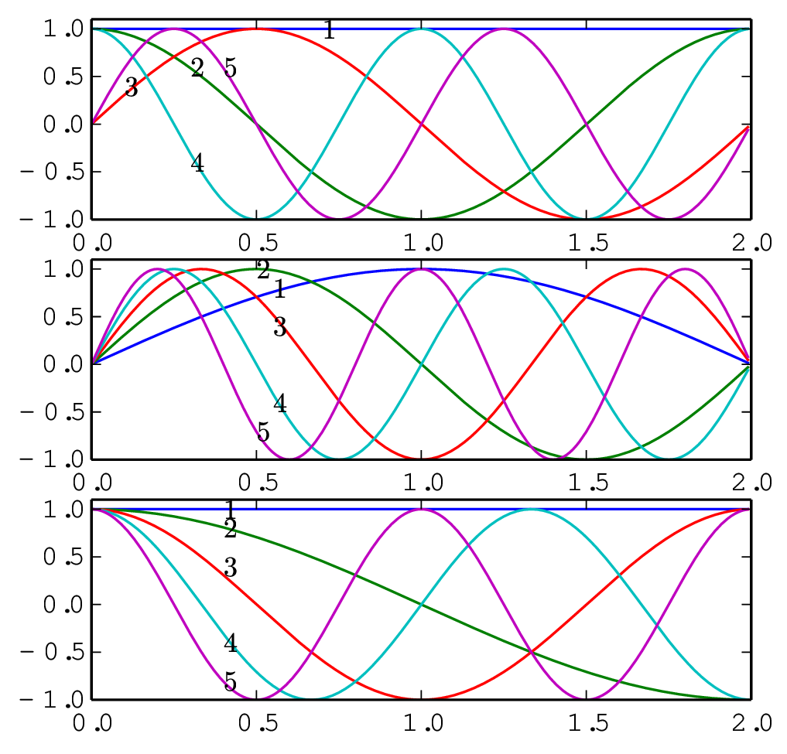
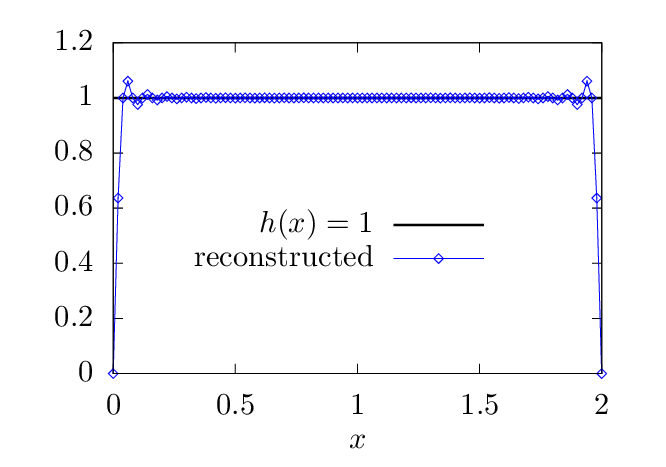
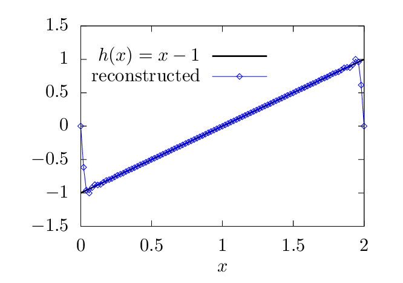

We mentioned (without giving proof) that the set of functions cos(kπx∕L) and sin(kπx∕L) with k = 0,1,…∞ is a “complete set” in expanding any function in the interval (x0,x0 + 2L), where x0 is an arbitrary point. Therefore Fourier series use both cosine and sine as basis functions to expand a function. Let us introduce another conclusion (again without giving proof) that the set of sine functions sin(kπx∕(2L)) with k = 1,2,…∞ is a “complete set” in expanding any function h in the interval (x0,x0 + 2L). A similar conclusion is that the set of cosine functions cos(kπx∕(2L)) with k = 0,1,2,…∞ is a “complete set” in expanding any function h in the interval (x0,x0 + 2L). Note that the argument of the basis functions used in the Fourier expansion and the sine (or cosine) expansion differs by a factor of two, namely kπx∕L and kπx∕(2L).
The first five basis functions used in Fourier expansion, sine expansion, and cosine expansion are plotted in Fig. 3.

The basis function bk(x) used in the Fourier expansion have the properties bk(x0) = bk(x0 + 2L). Therefore Fourier expansion works best for function that satisfy h(x0) = h(x0 + 2L). For functions that do not satisfies this condition, there will be Gibbs oscillations near the interval boundary when approximated by using the Fourier expansion. A function with h(x0)≠h(x0 + 2L) can still be considered as a periodic function with period 2L but having discontinuity points at the interval boundary. Gibbs oscillation appear near discontinuity points, which can be inner points in the interval or at the interval boundaries.
The basis functions bk(x) used in the sine expansion have the properties bk(x0) = bk(x0 + 2L) = 0. Therefore since expansion works best for functions that satisfy h(x0) = h(x0 + 2L) = 0. For functions that do not satisfies this condition, there will be Gibbs oscillations near the interval boundary when approximated by using the sine expansion. Examples are shown in Fig. 4.
The basis functions bk(x) used in the cosine expansion have the properties bk′(x0) = bk′(x0 + 2L) = 0. Therefore cosine expansion works best for functions that satisfy h′(x0) = h′(x0 + 2L) = 0. For functions that do not satisfies this condition, there will be Gibbs oscillations near the interval boundary when approximated by using the cosine expansion (to be verified numerically by me).
 
Next, let us discuss the sine and cosine transformation.